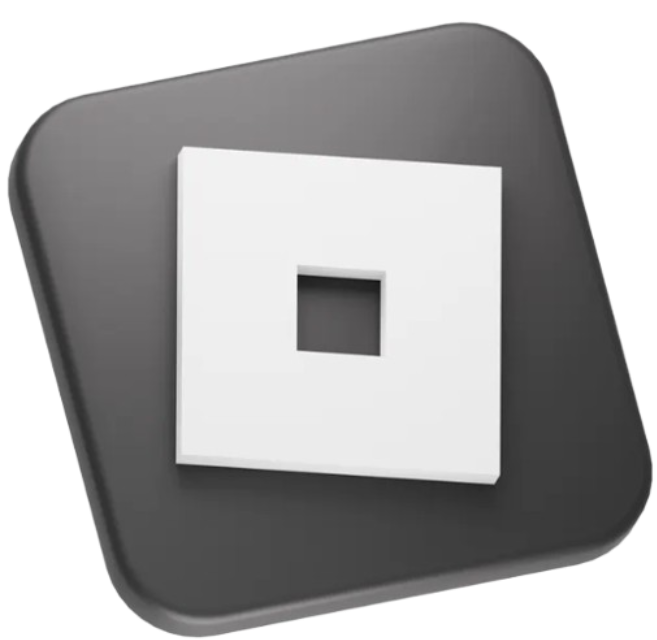

Multi-talented Roblox developer

I have been working as a Roblox developer since 2022. I have created my own games and helped others with theirs. Roblox is an easy platform for game developers, and I personally enjoy using Roblox Studio.
Brief Background

I am a young man born in 2006 with skills mainly focused on programming. I have been coding for around 7 years and I know Python (my main programming language), Lua, SQL, JavaScript, HTML, CSS, C#, and many others. I am also an artist and musician. I have around 10 years of experience in both areas. In music, I have worked as a mixing engineer and guitarist (mainly rock-style music). On the art side, I have drawn manga and created all kinds of icons and thumbnails for my games.
My Skills
Lua Scripter
My background is in programming, and I have programmed in many different languages. Lua is my second most-used language. I have created datastore scripts, animation managers, AI systems, and many other systems depending on what is needed. If you want to take a closer look at how my code looks and works, head over to the Script Workspace section.
Modeler
At first, I only created models in Roblox Studio, but in 2025 I started creating models exclusively with Blender. My style focuses on detailed models rather than cubic or low-poly designs. I always pay attention to details, and I simply do not like making low-quality models. My usual workflow is splitting the model into parts and then assigning separate materials and colors to each part inside Roblox Studio. However, it is also completely possible for me to create full textures for the entire model. Since I am also an artist, creating textures feels natural to me. I understand shading and lighting well thanks to my artistic background, so those are not a problem either. If you want to take a closer look at what my models look like, head over to the Model Workspace section.
Artist
I am an artist with 11 years of experience. I create my own manga and have made many things for Roblox, such as logos, icons, currency images, thumbnails, and various other graphics commonly used in UI. I would not specifically call myself a Roblox UI interface developer because it simply does not feel like my thing. I am skilled at creating UIs for my own Python programs, for example, but I do not particularly enjoy making Roblox UIs. However, I can draw all the icons and graphics needed for UI design. If you want to take a closer look at my drawings, currencies, thumbnails, and other artwork, head over to the Art Workspace section.
Animator
I have some experience with animation (I would say around 2 years). I mainly create cutscene-style animations that focus on what the viewer sees through the camera. However, I can also create smooth animations using Moon Animator 2, which is the software I always use for animation work. I have also animated custom rigged models and know how to create and assign rigs to characters inside Roblox Studio so they can be animated properly. If you want to take a closer look at my animations, head over to the Animation Workspace section.
Sound Designer and Video Editor
I have experience with music and audio mixing. I have been an electric guitarist for 10 years and have worked as a mixing engineer in different places. In Roblox projects, I usually use existing audio files that I mix and combine together to create complete soundtracks. I am also a video editor, where I typically add and synchronize audio tracks with the visuals. If you want to take a closer look at what my soundtracks sound like, head over to the Sound Workspace section.